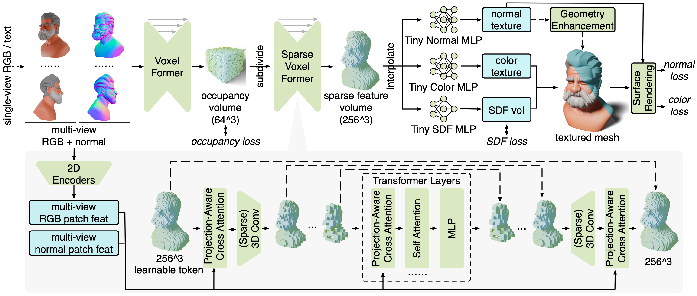

Abstract
Open-world 3D reconstruction models have recently garnered significant attention. However, without sufficient 3D inductive bias, existing methods typically entail expensive training costs and struggle to extract high-quality 3D meshes. In this work, we introduce MeshFormer, a sparse-view reconstruction model that explicitly leverages 3D native structure, input guidance, and training supervision. Specifically, instead of using a triplane representation, we store features in 3D sparse voxels and combine transformers with 3D convolutions to leverage an explicit 3D structure and the projective bias. In addition to sparse-view RGB input, we require the network to take as input and generate corresponding normal maps. The input normal maps can be predicted by 2D diffusion models, significantly aiding in the guidance and refinement of the geometry's learning. Moreover, by combining Signed Distance Function (SDF) supervision with surface rendering, we directly learn to generate high-quality meshes without the need for complex multi-stage training processes. By incorporating these explicit 3D biases, MeshFormer can be trained efficiently and deliver high-quality textured meshes with fine-grained geometric details. It can also be integrated with 2D diffusion models to enable fast single-image-to-3D and text-to-3D tasks.
Method Overview
MeshFormer takes a sparse set of multi-view RGB and normal images as input, which can be estimated using existing 2D diffusion models. We utilize a 3D feature volume representation, and submodules Voxel Former and Sparse Voxel Former share a similar novel architecture, detailed in the gray region. We train MeshFormer in a unified single stage by combining mesh surface rendering and 512^3 SDF supervision. MeshFormer learns an additional normal texture, which can be used to further enhance the geometry and generate fine-grained sharp geometric details.
Single Image to 3D
Qualitative Examples from the GSO dataset. Both the textured and textureless mesh renderings are shown. Please zoom in to examine details and mesh quality.
Application: Text to 3D

Geometry Enhancement
We task MeshFormer with outputting an additional 3D normal map, which can be used for geometry enhancement and generating sharper geometric details. This is achieved by applying a traditional algorithm as a post-processing step that aligns the mesh vertices with the normals.